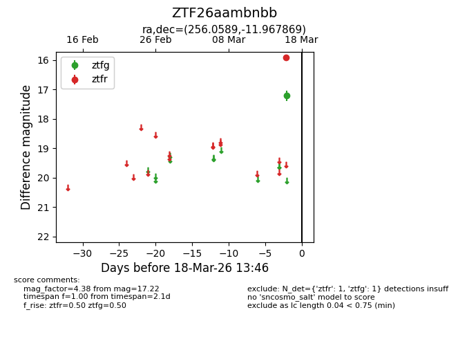
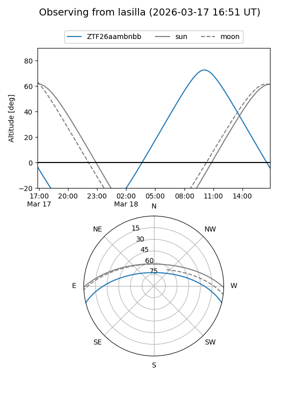
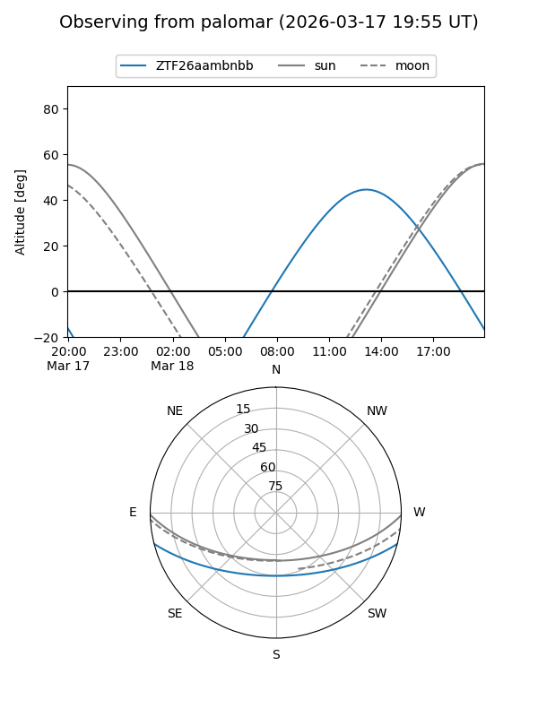

ZTF26aambnbb
Target ZTF26aambnbb at 2026-03-18 13:48
Aliases and brokers:
FINK: link
Lasair: link
ALeRCE: link
alt names
ZTF26aambnbb (ztf,fink_ztf)
Coordinates:
equatorial (ra, dec) = 256.0589,-11.96787
equatorial (HMS+DMS) = 17:04:14.15,-11:58:04.33
galactic (l, b) = (9.1012,+17.33791)
Flags:
Photometry:
last ztfg=17.22, ztfr=15.92
1 ztfg, 1 ztfr detections
Lightcurve

Visibility


Additional plots